Note
HELP(2)’는 1995 년 발표된 기념비적인 자선 앨범 ‘HELP’의 정신을 잇는 새로운 협업 프로젝트로, 전 세계 음악 팬들의 참여를 통해 분쟁으로 피해를 입은 아이들에게 긴급 구호, 교육, 전문적인 정신 건강 지원, 그리고 보호를 제공하는 War Child 의 핵심 활동을 지원하기 위해 기획되었습니다. 이번 앨범 역시 95 년도 HELP 과 마찬가지로, 오늘날 전 세계가 직면한 인도주의적 위기의 시급성을 강하게 반영하고있습니다
Tracklist
- 01Arctic Monkeys — Opening NightLYRICS
- 02Damon Albarn, Grian Chatten & Kae Tempest — FlagsLYRICS
- 03Black Country, New Road — StrangersLYRICS
- 04The Last Dinner Party — Let's Do It Again!LYRICS
- 05Beth Gibbons — Sunday MorningLYRICS
- 06Arooj Aftab & Beck — Lilac WineLYRICS
- 07King Krule — The 343 LoopLYRICS
- 08Depeche Mode — Universal SoldierLYRICS
- 09Ezra Collective & Greentea Peng — HelicoptersLYRICS
- 10Arlo Parks — Nothing I Could HideLYRICS
- 11English Teacher & Graham Coxon — ParasiteLYRICS
- 12Beabadoobee — Say YesLYRICS
- 13Big Thief — Relive, RedieLYRICS
- 14Fontaines D.C. — Black Boys On MopedsLYRICS
- 15Cameron Winter — WarningLYRICS
- 16Young Fathers — Don't Fight The YoungLYRICS
- 17Pulp — Begging For ChangeLYRICS
- 18Sampha — NabooLYRICS
- 19Wet Leg — ObviousLYRICS
- 20Foals — When The War Is Finally DoneLYRICS
- 21Bat For Lashes — Carried My GirlLYRICS
- 22Anna Calvi, Dove Ellis, Ellie Rowsell & Nilüfer Yanya — Sunday LightLYRICS
- 23Olivia Rodrigo — The Book of LoveLYRICS
Documentation

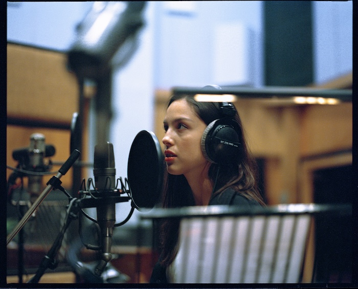
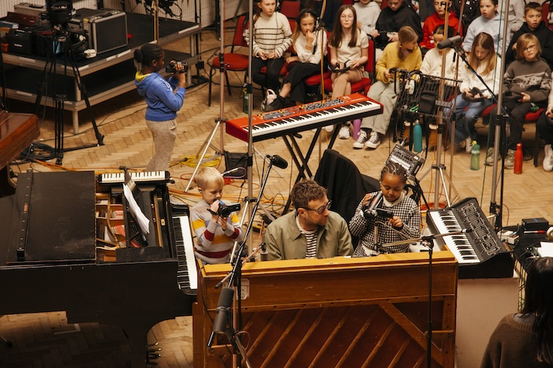
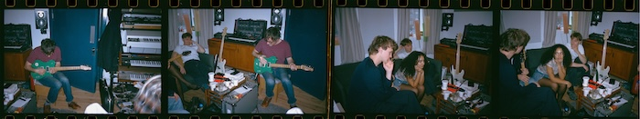
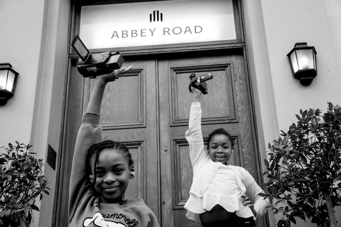
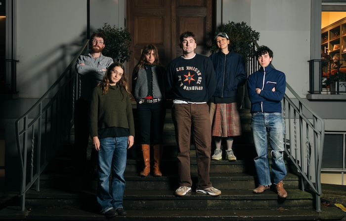
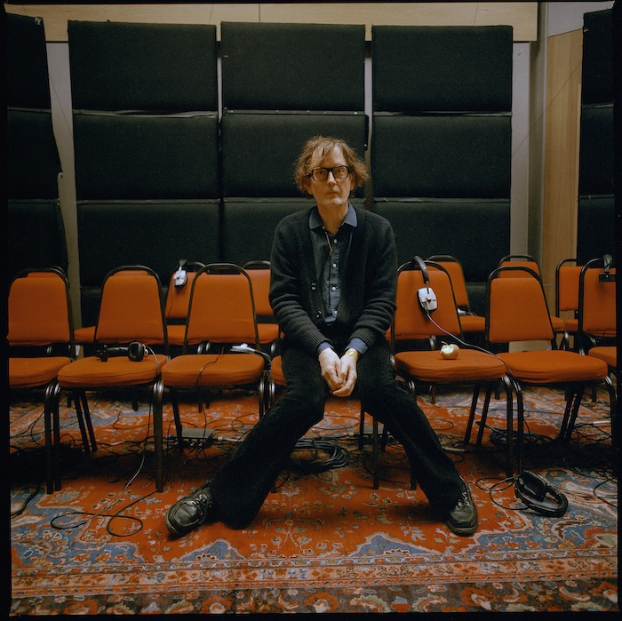
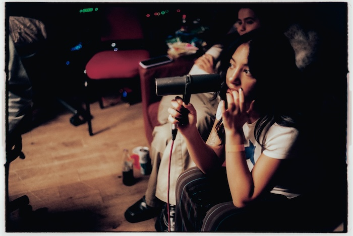
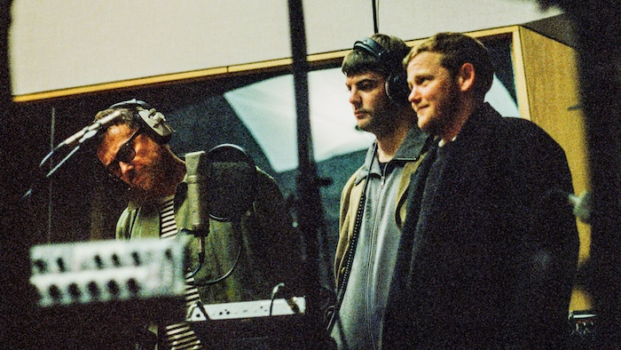
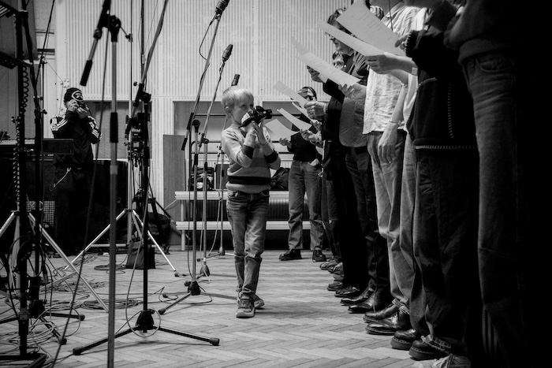
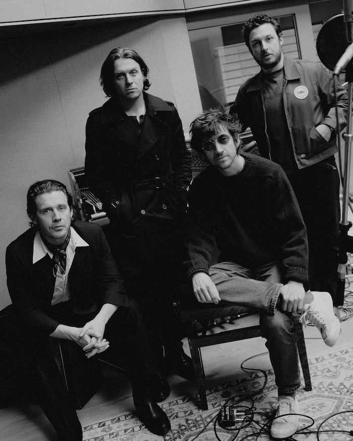
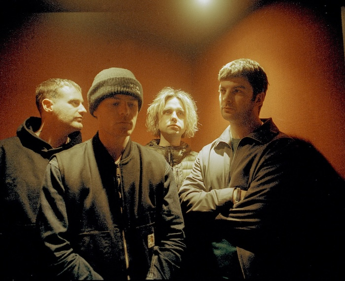
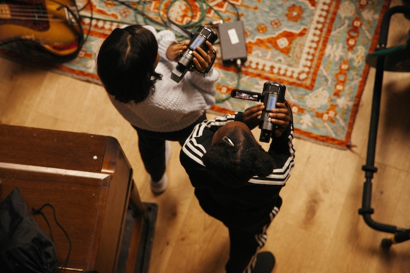
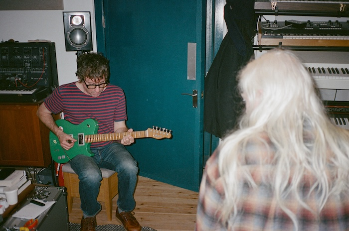
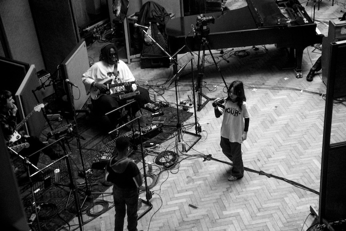
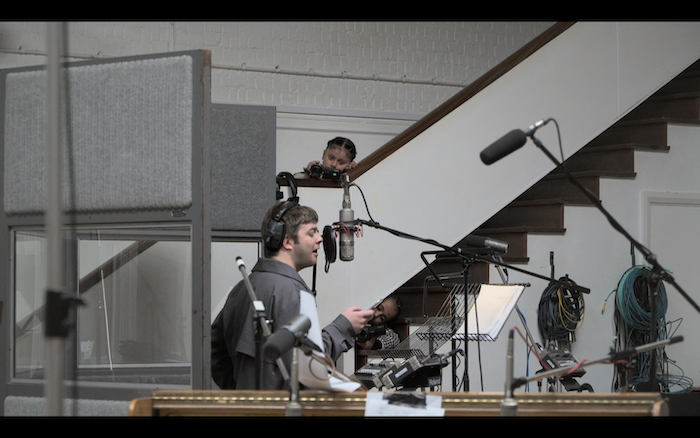
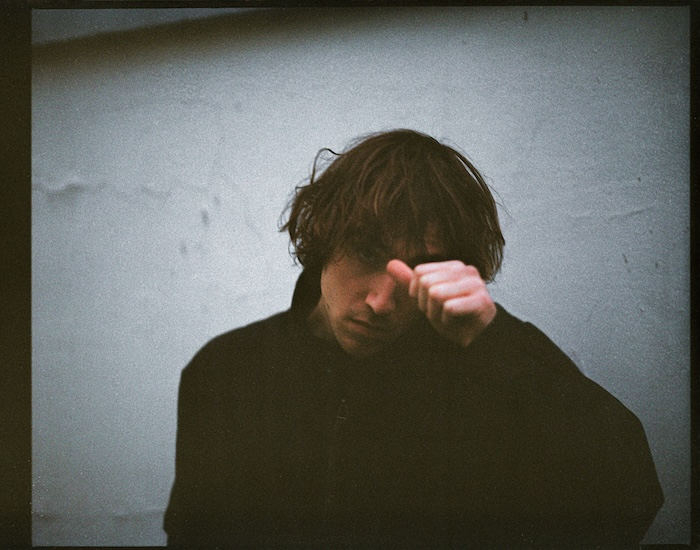
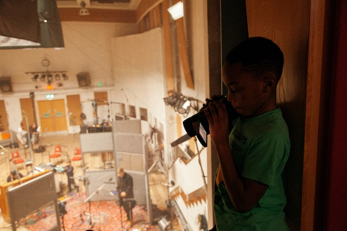
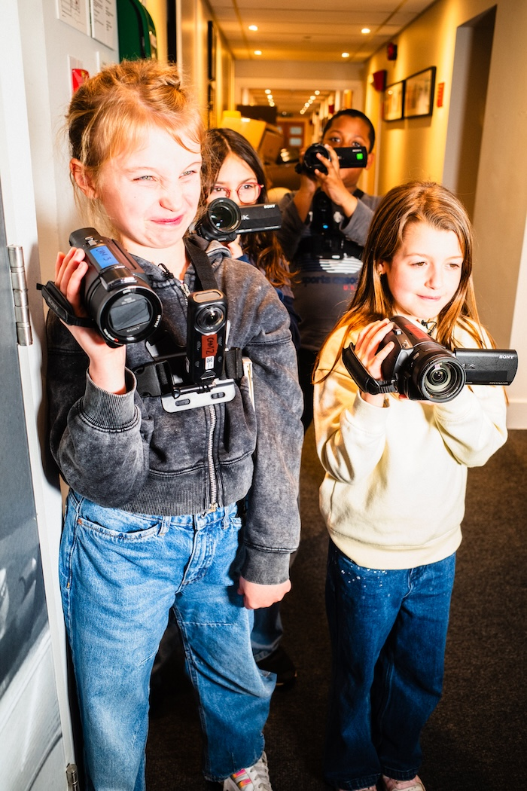
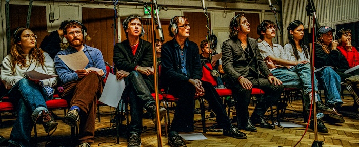
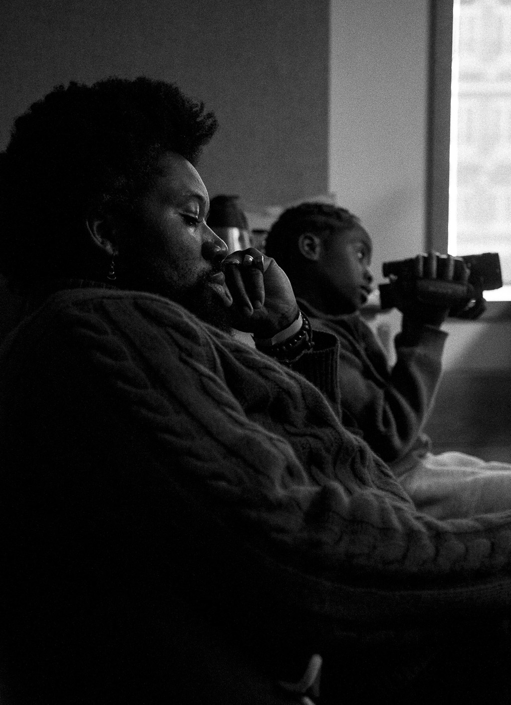
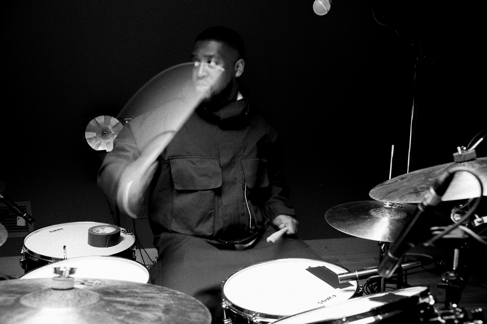
* 2026, powered by Beggars Korea